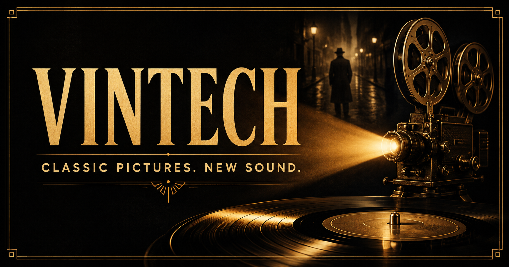

Vintech
Classic pictures. New sound. Explore a double feature of silent comedy and detective cinema with alternate soundtracks.
Open Vintech →
Classic pictures. New sound. Explore a double feature of silent comedy and detective cinema with alternate soundtracks.
Open Vintech →